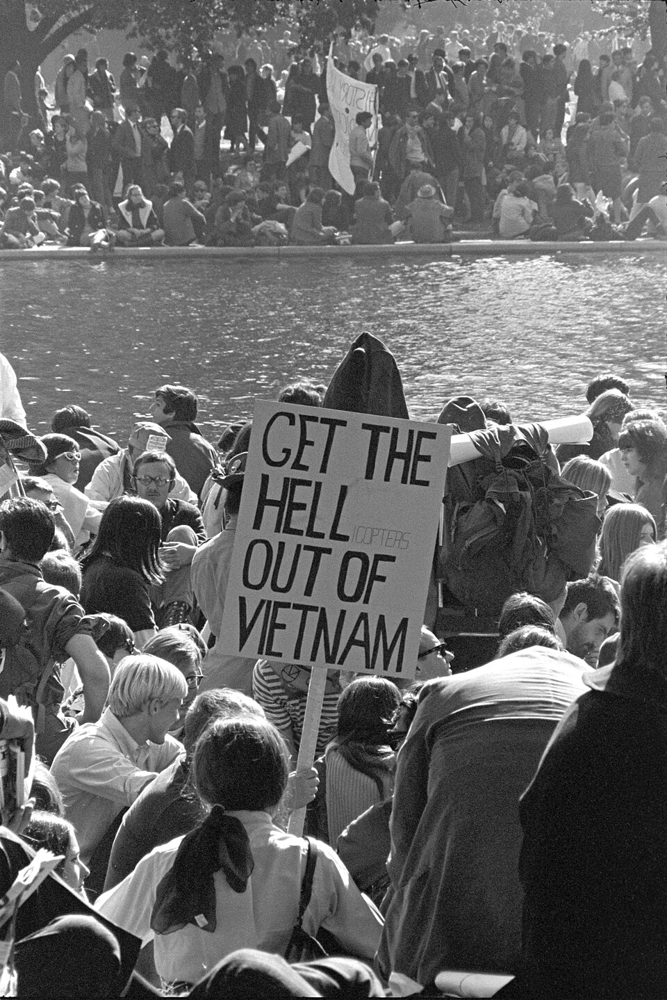
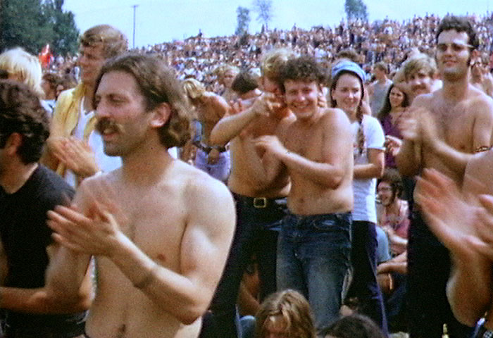

The Rights Conscious 60s · 1960–1973
White, middle-class, college youths grew disillusioned with the Vietnam War and materialism. By 1970, more than half the American population was under 30 years old, and over 8 million citizens attended college.
Hippies ran a majority of the counterculture movement. They were white, middle-class, college youths who grew up disillusioned with the Vietnam War and materialism.
By 1970, more than half the American population was under 30 years old, and over 8 million citizens attended college.
Away from the Hippies, the New Left also became popular. The New Left were students who were radicalized by the civil rights movement and antiwar activism, who tried to achieve individual freedoms.

The goals were to create a new community to break elite power, end war, and focus on racial and economic justice. Ending the Vietnam War and the war draft, equality for all people, and building a society on peace and love.
"We are people of this generation, bred in at least modest comfort, housed now in universities, looking uncomfortably to the world we inherit… We would replace power rooted in possession, privilege, or circumstance by power and uniqueness rooted in love, reflectiveness, reason, and creativity."
— Port Huron Statement, 1962. View full document (PDF) →
The Port Huron Statement signifies the overall themes of the counterculture movement, relating to the New Left. It specifically states the disillusionment with the society they inherited, mainly from the fears of nuclear war and other factors. It called for a set of new politics, that would actually support the people.
Ending the Vietnam War and the war draft was a central demand of the counterculture movement.
The goals were to create a new community to break elite power.
The movement focused on racial and economic justice.
Equality for all people was a core principle of the movement.
Building a society on peace and love.
The New Left tried to achieve individual freedoms.
He was a Harvard psychology professor and philosopher of the counterculture. He became a leader by promoting the use of LSD. He said, "Turn in, turn on, drop out." This quote promoted the youth to leave school and create idyllic groups. LSD also became very popular to use in events such as Woodstock and Attamont.
A very popular band in America, and by the late 60s, abandoned romantic themes of music for more eastern religions and drugs.
A leader in the pop art movement.
College students from across the country met in Michigan, and created the Students for a Democratic Society (SDS). They believed that the society they inherited needed to be fixed by a whole new set of politics. (See primary source in Goals section above.)
Students occupied administrative offices, clashed with officers, and 75% of students struck to fight for their right to free speech. It gained national attention, and helped to lead to more pressure for change in universities.
"The same rights are at stake in both places—the right to participate as citizens in [a] democratic society and the right to due process of law."
— Mario Savio, "An End to History," December 2, 1964. Read full speech →
Mario Savio was a student at UC Berkeley who delivered one of the most important speeches of the Free Speech Movement. His main point was that students had the right to use university grounds to state political opinions, as citizens of the United States of America. These actions he was highlighting helped to gain national attention, and eventually cause change across the country.
Students tried to create a park on an empty lot, and had violent fights with administrators. Over 85% of students ended up supporting the park. National Guard were even sent in to break up the protests.

Over 400,000 people showed up to a music festival in upstate New York with artists such as The Grateful Dead, Jimi Hendrix, and more playing. It mainly attracted the hippies, whose anti-war beliefs helped shape the overall experience.
Attamont was another free concert, similar to Woodstock, with a majority of similar bands playing. However, the Hells Angels, a known motorcycle gang, were hired as security. From this violence was prevalent, with a total of 4 people dying from either drug overdoses, or violence.
"An Era of Social Change"
"The Rights Conscious 60's"
"The Crisis of Authority"
Lead your protesters down the streets of America! Jump over police barriers, collect peace signs to grow your crowd, and march all the way to Washington. Use SPACE or UP to jump, DOWN to duck.